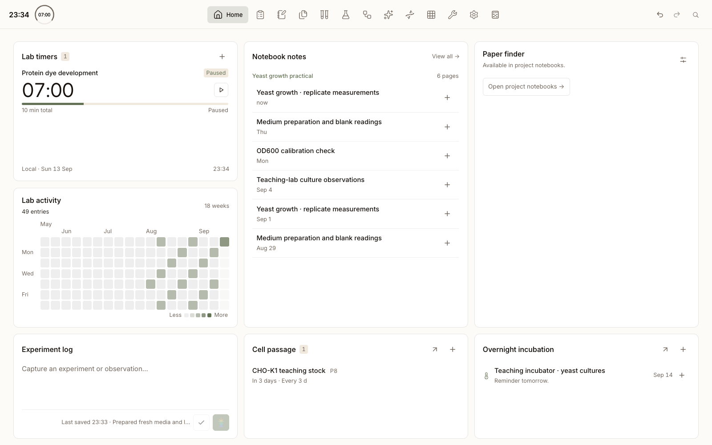

{{ p.title }}
{{ p.body }}
Planning, protocols, experiment records, assays, papers, sequences and AI — twelve workspaces in one desktop app, over one folder you own. No hosted backend, no account.

Home dashboard, shown with fictional biology demo data.
{{ p.body }}
Each dock entry is a full workspace, and they read each other's records. Pick one to see what it does.
{{ current.tagline }}
Start an experiment from a protocol and Hikari snapshots the protocol text that was actually run. From there the record can carry a sample, a reagent lot, an assay plate, a gel lane table and a paper — each one read live from the module that owns it.
Result tables use the same spreadsheet formula engine as Assay, and the finished entry
exports to PDF with its tables and previews intact.
Grounded in the project you have open, and never the author of your data — anything it wants to write goes through a review card first.
{{ a.body }}
codex CLI. Hikari stores no API endpoint and no API key —
and every AI feature is optional; the rest of the app works without it.
Eleven of them, in the app, next to the records they feed.
You set a storage root once. Every heavy file — notebook attachments, papers, assay artifacts,
gel images, sequence assets — lands under it, beside a single .json/.ena snapshot
of the records themselves.
That makes backup a folder copy, sharing a file, and inspection a text editor. Large inventories stay fast through an on-disk index. Nothing leaves the machine unless you ask it to.
# your storage root
lab-data/
├─ enana-data.ena.json # every record, one snapshot
├─ notebook/ # entry attachments + page log
├─ papers/ # PDFs, comments, summaries
├─ assay/ # analysis JSON, chart SVG
├─ gels/ # gel images and reports
└─ sequences/ # imported sequence assetsPlugin workspaces run in a sandboxed iframe with a declared permission list and appear behind the dock's More button.
Gel ships bundled: TIFF ingestion, crop and free rotation, lane segmentation, ladder calibration, band quantification and peak editing, plus PNG export at up to 4× density and PowerPoint export that keeps the lane table as an editable native table.
And gets nothing else — no notebook, project, sample or protocol access.
{{ p }}
Notebook and Agent can still display saved gel records by reading the plugin's
persisted index. That one-way read grants the iframe nothing.
Needs Node.js 20+ and npm. macOS, Windows and Linux.
npm install
npm run startSettings › Storage — do this before anything else.Settings.codex CLI if you want the Agent, paper summaries or protocol drafting.New here? The 15-minute first-experiment tutorial carries one fictional experiment from sample registration to a saved notebook result.